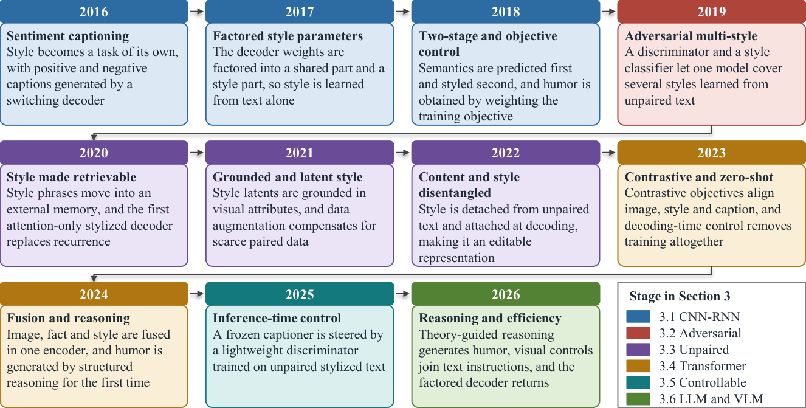

BSc in Computer Science and Engineering, Khulna University of Engineering & Technology (KUET), Bangladesh
Research Intern, Elite Research Lab, Dhaka (Jan 2026 to present): building computer vision models for healthcare data, with a focus on model development, experimental evaluation and technical reporting.
Vision-Language and Multimodal Generative Modeling
Trustworthy and Explainable AI for Healthcare
Rationale Faithfulness and Medical Knowledge Grounding
Controllable Generation and Parameter-Efficient Adaptation
Publications
Advances in Stylized Image Captioning: A Systematic Review of Methods, Benchmarks, Evaluation, and Research Gaps
Nishat Tasnim, Dipannita Biswas · IET Computer Visionaccepted
A systematic review of stylized image captioning from 2016 to 2026: 832 records screened and 49 primary studies included. It traces the field's shift from CNN-LSTM and adversarial models to Transformer, controllable and LLM-based generation, and finds that evaluation remains fragmented, with two small English benchmarks still central. It identifies five open challenges: style versus visual grounding, evaluation standards, moving beyond English and culture, safety/bias/hallucination, and stylized versus controllable captioning.

A decade of stylized image captioning (2016–2026): from switching decoders and adversarial multi-style to retrieval, grounding, disentanglement, contrastive and zero-shot learning, and reasoning- and LLM-based generation.
Research
Style Controlled Image Captioning in Bangla
Undergraduate thesis, KUET · extended into the journal manuscript BnStyleCap (in preparation) · code
The first Bangla model that writes factual, humorous and romantic captions for an image. Because no Bangla stylized caption data existed, humorous and romantic captions were written by an LLM from human factual captions for 35,618 images and checked with caption-level constraints, yielding 17,362 humorous and 17,344 romantic training captions. A multilingual vision-language encoder (NLLB-CLIP) shares one space for Bangla images and text; a prefix mapping network feeds a Bangla GPT-2 decoder, and style tokens switch the mode. Stage 1 learns factual captioning from images, Stage 2 learns style from text alone, and a scaled mean offset bridges the image-text gap at inference.
Results of BnStyleCap on 1,000 test images, compared with Qwen2.5-VL 7B prompted zero-shot.
Romantic ছোট শিশুর দোলনায় দোল খাওয়ার এই ছোট্ট মুহূর্তগুলো চিরকাল মনে থাকবে।
Explainable Medical Visual Question Answering in Bangla
In progress
Building Bangla versions of rationale-annotated MedVQA benchmarks (R-RAD, R-SLAKE, R-PathVQA) and adapting MedThink (Gai et al., 2024), a lightweight generative MedVQA framework that outputs an answer together with a medical decision-making rationale, to the Bangla language.
Projects
404 Project Not Found
A full-stack workspace application, organized as a monorepo, that combines a Kanban task board with an image annotation canvas for drawing and saving polygons. The Next.js / React / TypeScript frontend (Konva for annotation, drag-and-drop task columns, JWT auth with automatic token refresh) talks to a Django REST Framework backend that handles authentication, task storage and image uploads.
A CPU-based tool that converts PDF files into clean, structured Markdown. It detects headings from font-size metadata, extracts paragraphs, lists and tables, applies bold/italic from font names, and falls back to Tesseract OCR for scanned PDFs, with an optional LLM cleanup step and a browser upload-and-download interface.
A 3D animated beauty-salon scene built in OpenGL and C++: real-time Phong and Gouraud lighting, textured surfaces, objects built from spheres, cylinders and Bezier curves, a sliding-door showroom, rotating fixtures, and interactive camera controls.
A two-player strategic AI game using Minimax for decision optimization, with adaptive opponent behaviour tuned by a genetic algorithm and dynamic difficulty adjustment.